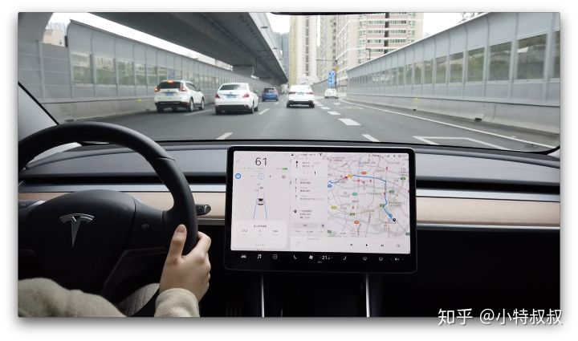

六月七号提车，到现在两个来月。其他汽车对我来说只是代步工具。但特斯拉却是“智能汽车”。特斯拉 和 iPhone 有着明显的相似之处。都没有物理按钮。没有旋钮。（没有空调通风口。也没有打开手套箱的手柄。他们将所有一切都收在了汽车中间的触摸屏上）。我们回过头看看当年的iPhone好了。08年的时候，Nokia的市场占有率大概是40%，年收入70b。那时候的Apple靠着卖卖mp3啥的，年收入大概是30多b。08年IPhone 3G出现，到10年IPhone4改变人类对手机的概念，两年之后Apple已经完成了对Nokia的反超，11年年收入110b超过了Nokia一倍！ Nokia眼睁睁看着自己手机市场第一的位置被苹果拿走，霸占到现在。现在的Nokia勉强残喘着，可能偶尔回忆一下当年的辉煌。所以特斯拉代表的汽车未来发展三个方向中的两个，并且是发展最好的企业：自动驾驶和新能源。另外一个是汽车共享，特斯拉也有了规划。特斯拉确实占尽优势。 这是电动车，在保证空间的前提下下可以有很强的动力，可以装13，不花油钱，电费比油费便宜太多了。
|
|
|
|---|---|
|
|
|
|
特斯拉公司老板马斯克用其旗下的火箭公司SpaceX，发射了迄今为止使用中的最强力火箭（本火箭还可回收），把一辆樱桃红色的特斯拉跑车送入地球至火星的椭圆形轨道。
没有手刹，离开自动锁车，对于「忘事佬」真的很省事、省心； 全身多个摄像头、传感器，在停车、转弯的时候，可以很精确的感知到周围情况。正因为没有发动机，还空出了一个前备箱的位置，这里体现出了电动车的结构优势。人人都知道，特斯拉汽车的内饰中央，是一块又中看又中用的硕大屏幕。 操控自如、反应灵敏、画质清晰、流畅的就像一台ipad。下图的弧线既是对周围障碍物的感知。

手机App随时查看车辆位置、状态等，甚至控制它的；大热天的，提前十分钟用App打开空调也是蛮爽的。 不定期的系统OTA更新，带来更强大、更细致的功能；类似于iPhone的升级手机系统，特斯拉的升级频率很勤快，几乎每隔两周就有个小更新。
去页面顶部这是最值得花钱的地方，它使得长途高速驾驶不那么累。 特斯拉会自己固定在一个车道行驶，自动转弯，如果前方有车，会保持和前车的距离。需要做的是握住方向盘，保持一定警惕性，以防路面有障碍物或者邻车随意变道等。
没有发动机，所以也不用换机油什么的，保养费用几乎为0。家里还可以安装充电桩。我在家里充电的费用大概是每百公里一加元左右，跟油费比起来，电费几乎可以忽略不计。
去页面顶部特斯拉汽车在全球采用直营店+自营电商模式，提供零售服务。 在各个市场，他们采用简单透明的定价方式。这就让你不用在购买汽车的时候货比三家，在不同的经销商网点勾心斗角、软磨硬泡，被捆绑销售各种附加商品，接受莫名其妙的捆绑衍生服务。其实，很多时候，消费者不是付不起钱，而是怕吃亏。 买特斯拉，统统一口价，一口价你买不了吃亏，一口价你买不了上当。

某种程度上，特斯拉汽车开创了智能互联汽车的先河。（通用Onstar和丰田G-book相比之下，弱爆了，就不作数了） 它的操作系统和软件，可以空中升级。 它像一家互联网公司一样，快速迭代软件，并且推送给用户车辆下载。 在过去一年的时间，自动辅助驾驶技术，至少推送了三个重要的更新版本——在传统汽车公司，实现这样的产品更新幅度，可能需要3年以上。环绕车身共配有 8 个摄像头，视野范围达 360 度，对周围环境的监测距离最远可达 250 米。12 个新版超声波传感器作为整套视觉系统的补充，可探测到柔软或坚硬的物体。就是有人划了你的车，你也不用担心。八个摄像头的监事视频无时不刻地将数据上传至云端服务器上，以供你日后调取取证。